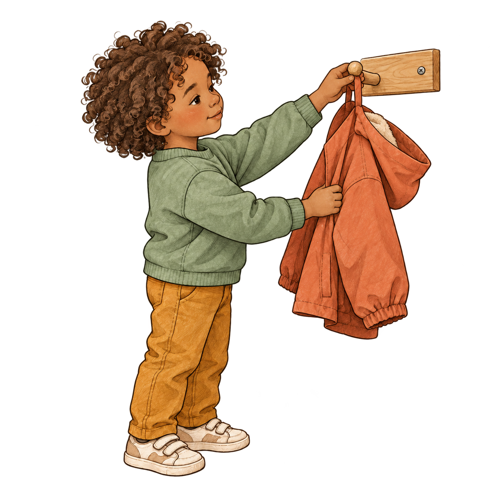
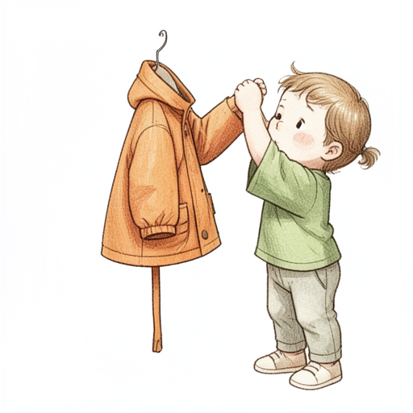
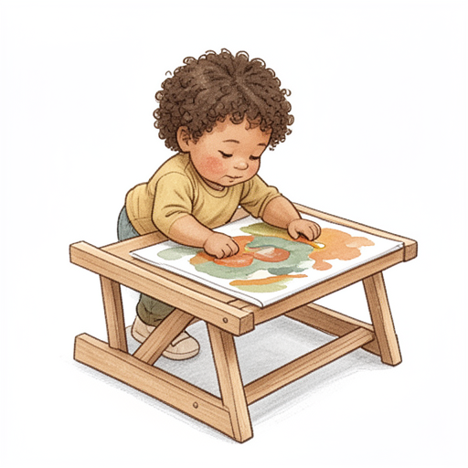
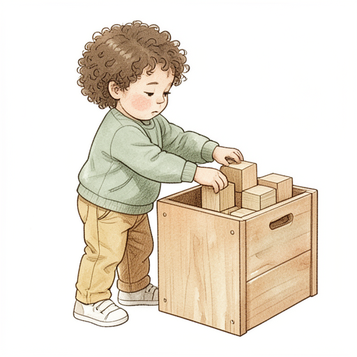

Bildkandidater

Stilreferens · se kandidatens metadata för om modellen använder referensbilden som indata.Kontrollera handling, händer, borttagning av bakgrund och stil mot referensbilden. Ingen kandidat är publicerad.
Jag hänger upp jackan.Utkast · granskning krävsFöre friläggning


Jag lägger målningen på tork.Utkast · granskning krävsFöre friläggning

Jag lägger klossarna i lådan.Utkast · granskning krävsFöre friläggning